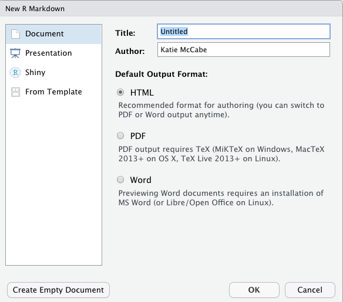
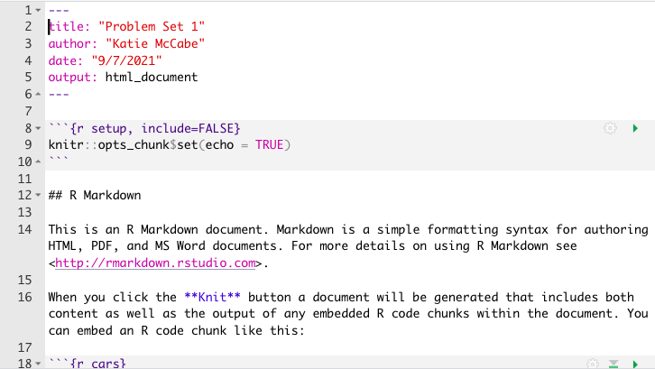
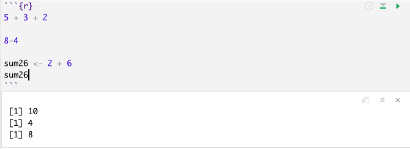

1.3 R Markdown
An R Markdown document, which you can create in RStudio, allows you to weave together regular text, R code, and the output of R code in the same document. This can be very convenient when conducting data analysis because it allows you more space to explain what you are doing in each step. It can also be an effective platform for writing a report on a data analysis, similar to what you do when you write up a problem set. It can also be useful for organizing replication files to post after you publish a paper.
R Markdown documents can be “compiled” into html, pdf, or docx documents. Below is an example of what a compiled html file looks like.
- Note that the image has both written text and a gray chunk, within which there is some R code, as well as the output of the R code (e.g., the number 8 and the image of the histogram plot)
We say this is a “compiled” RMarkdown document because it differs from the raw version of the file, which is a .Rmd file format. Below is an example of what the raw .Rmd version looks like, compared to the compiled html version.

1.3.1 How to get setup in RMarkdown
Just like with a regular R script, to work in RMarkdown, you will open up RStudio.
The first time you will be working in RMarkdown, you will want to install two packages: rmarkdown and knitr. You can do this in the Console window in RStudio.
Type the following into the Console window and hit enter/return.
install.packages("rmarkdown")
install.packages("knitr")Once you have those installed, now, each time you want to create an RMarkdown document, you will open up a .Rmd R Markdown file and get to work.
- Go to File -> New File -> R Markdown in RStudio
- Alternatively, you can click the green + symbol at the top left of your RStudio window
- This should open up a window with several options, similar to the image below
- Create an informative title and change the author name to match your own
- For now, we will keep the file type as html. In the future, you can create pdf or .doc documents. However, these require additional programs installed on your computer.

- After you hit “OK” a new .Rmd script file will open in your top-left window with some template language and code chunks, similar to the image below.

- Save as .Rmd file. Save the file by going to “File -> Save as” in RStudio
- Give the file an informative name like your LastnamePractice1.Rmd
- Key Components. Now you are ready to work within the Rmd script file. We will point to four basic components of this file, and you can build your knowledge of RMarkdown from there.
- The top part bracketed by
---on top and bottom is the YAML component. This tells RStudio the pertinent information about how to “compile” the Rmd file. Most of the time you can leave this alone, but you can always edit the title, author, or date as you wish. - The next component are the global options for the document. It is conveniently labeled “setup.” By default what this is saying is that the compiled version will “echo” (i.e., display all code chunks and output) unless you specifically specify otherwise. For example, note that it says
include = FALSEfor the setup chunk. That setting means that this code chunk will “run” but it will not appear in the nicely compiled .html file. Most of the time you will not need to edit those settings. - The third component I want to bring attention to is the body text. The # symbol in RMarkdown is used to indicate that you have a new section of the document. For example, in the compiled images at the beginning, this resulted in the text being larger and bolded when it said “Problem 2.” In addition to just using a single #, using ## or ### can indicate subsections or subsubsections. Other than that symbol, you can generally write text just as you would in any word processing program, with some exceptions, such as how to make text bold or italicized. (See bottom of section for resources on the Markdown language.)
- The final component I want to call attention to are the other main body code chunks. These are specific parts of the document where you want to create a mini R script. To create these, you can simply click the + C symbol toward the top of the top left window of RStudio and indicate you want an R chunk.

- For example, in the image above, there is an R code chunk labeled
cars. Thecarscomponent is just a label for the code chunk. Labeling code chunks is not necessary. By default, a new R code chunk will just haverin the brackets, and that is sufficient.
- The top part bracketed by
- Writing R Code. Within a code chunk, you can type R code just like you would in any R script. To run (“execute”) the R code, you can run a single line the exact same way you do in a regular R script by moving the cursor to the end of a line of code or highlighting a portion of code and hitting “Run.” However, in RMarkdown, you also have the option of running an entire code chunk at once by hitting the green triangle at the top-right of a given code chunk.

- Knitting the document. Once you have added a code chunk and/or some text, you are ready to compile or “Knit” the document. This is what generates the .html document.
- To do so, click on the Knit button toward the top of the top-left window of Rstudio. After a few moments, this should open up a preview window displaying the compiled html file.
- It will also save an actual .html file in your working directory (the same location on your computer where you have saved the .Rmd file)
- Try to locate this compiled .html file on your computer and open it. For most computers, .html files will open in your default web browser, such as Google Chrome or Safari.
- This step is a common place where errors are detected and generated. Sometimes the compiling process fails due to errors in the R code in your code chunks or an error in the Markdown syntax. If your document fails to knit, the next step is to try to troubleshoot the error messages the compiling process generates. The best way to reduce and more easily detect errors is to “knit as you go.” Try to knit your document after each chunk of code you create.
1.3.2 Additional RMarkdown resources
Here are a few additional resources for working with RMarkdown.
- This website provides some basic syntax for the Markdown language, such as how to display bulleted lists and how to bold or italicize text.
- This page walks through the setup of RMarkdown documents similar to what the course notes just did. This provides a second set of instructions and additional examples of settings you can use to customize your RMarkdown output (e.g., how large figures are when they are displayed).
- This page talks more about compiling aka rendering aka knitting Rmd documents into different formats, such as html, pdf, or Word doc files.
1.3.3 Practice with R Markdown
Below is an exercise that will demonstrate you are able to use R as a calculator and compile RMarkdown documents.
- Create an Rmd file saved as “LastnameSetup1.Rmd” (use your last name). Provide an informative title for the document.
- Create a section labeled “Problems.”
- Create a code chunk where you do the calculation 8 + 3 - 2 in R. Store it as an object with an informative name. Report the answer as text underneath the code chunk.
- In a second code chunk, do the calculation 5 x 3 in R. Store it as an object with an informative name. Report the answer as text underneath the code chunk..
- In a third code chunk, add these two calculations together. Note: do this by adding together the objects you created, not the underlying raw calculations. Report the answer as text underneath the code chunk..
- Knit the file to create an html document. Open the html document in a web browser to check the formatting.